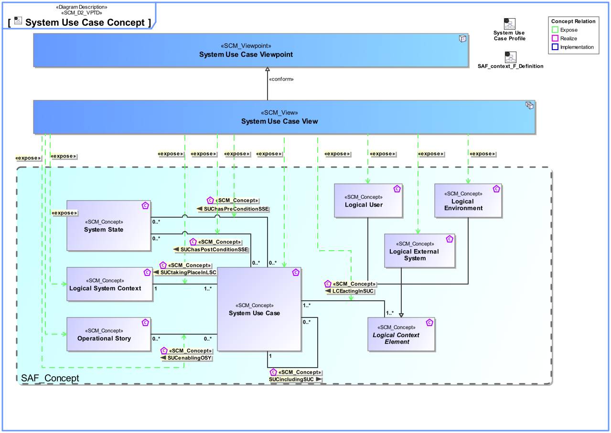
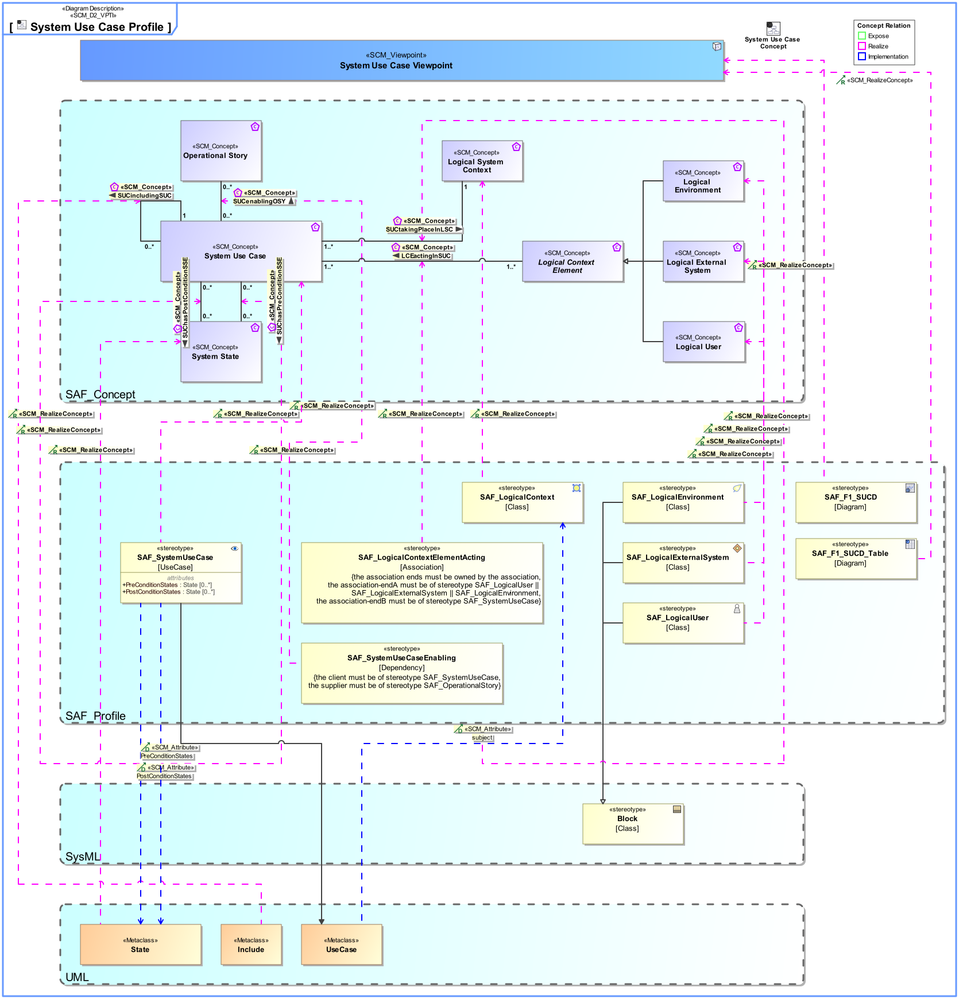

F1_SUCD System Use Case Viewpoint
| Domain | Aspect | Maturity |
|---|---|---|
| Functional | Context & Exchange |


The System Use Case Viewpoint provides an outside view on the system functionality from the perspective of the system users and contributes to the definition of system requirements and system usage. The intended system use may be captured as free-text use case description, as well as storytelling approach on a coarse level of detail. The main system exchange partners participating in the intended system use are identified. System use cases are related to a specific system context. System use cases are derived from operational scenarios elaborated during mission analysis.
The System Use Case Viewpoint supports the “Stakeholder Needs and Requirements Definition Process” and the “System Requirements Definition Process” activities of the INCOSE SYSTEMS ENGINEERING HANDBOOK 2023 [§2.3.5.2, §2.3.5.3] and contributes to the definition of the system boundary and the identification of the expected system function.
A use case diagram featuring model elements representing System Use Cases, System Context, and System Context Elements. The System Context shall be used as subject of the use case. The System Context Elements playing a Role in the Use Case shall be connected to the Use Case by associations. Note: System Use Case pre- and postconditions shall be represented either by callout or compartment notation. Relationship to operational stories can be related to the use case in order trace to mission analysis.
A tabular format listing the System Use Cases, the System Use Case pre- and postconditions, the System Context, and the System Context Elements. Additionaly, the relationship to operational stories, if applicable.
The following Stereotypes / Model Elements are used in the Viewpoint:
The Diagram shows the concepts exposed by the viewpoint, and related concepts if necessary.

| Concept | Documentation |
|---|---|
| LCEactingInSUC | Specifies the fact that a Logical Context Element acts in one or more System Use Cases. |
| Logical Environment | A Logical Environment in the Logical Domain, outside the SOI scope, interacting with the SOI. E.g., air, dirt, sun, road. |
| Logical External System | A Logical External System in the Logical Domain, outside the SOI scope, interacting with the SOI. E.g., power grid, mobile network, fresh water system (in a house). |
| Logical System Context | Specifies the fact that a System Context for a System of Interest is defined on Logical Level. |
| Logical User | The Logical User is the representation for a human in the Logical Domain, outside the SOI scope, interacting with the SOI. |
| SUCenablingOSY | Specifies the fact that a System Use Case enables the realization of an Operational Story. |
| SUChasPostConditionSSE | Specifies the fact that a System Use Case has a state as Postcondition. |
| SUChasPreConditionSSE | Specifies the fact that a System Use Case has a state as Precondition. |
| SUCtakingPlaceInLSC | Specifies the fact that a System Use Case takes place in a Logical System Context. |
| Operational Story | The Operational Story represents one or more Operational Use Cases in the Usage Scenario identified by the Operational Context. The Operational Story is described as narrative story-telling. |
| System Use Case | The System Use Cases are a table of content of the services provided by the System of Interest to its System Actors. A System Use Case is only the abstract of the depicted System behavior and represents the purpose. While the main System of Interest interaction actors participating in this Use Case are identified, the behavior itself is specified by a Use Case Activity, Note: The intended use (and also misuse in so called "black use cases") of the System of Interest is captured in free text; story telling at a coarse level of detail which is understandable to Customers (non engineering stakeholders in general). |
The Diagram shows the implementation of exposed concepts.
